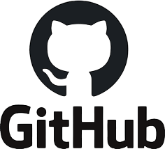

Обо мне
Я обучался 11 лет в Тверской школе №66. В настоящее время учусь в Государственном университете "Дубна" и изучаю основы монтажа и продюссирования, а также все свободноее время уделяю съемкам и самообучению.
Проекты, над которыми я работал
- Проект 1: Телеграм канал университета.
- Проект 2: Обучение студентов монтажу.
- Проект 3: Организация съемочной группы для университета.


Где я смог преуспеть?
- Участие в организации лагеря актива XI.
- Съемка мероприятий в рамках университета Дубна.
- Продюссирование съемки ГУД Day.
- Победа в конкурсе фотографов города Дубна.
Почему выбрать стоит выбрать нашу студию?
- Командная работа: Мы можем взаимодействовать с любым студентом и преподавателем. Один из примеров такой работы является интревью с Олегом Олеговичем, которое выйдет совсем скоро...
- Опыт работы:У нас в арсенале десятки проектов, которые показали себя на офмцмальном канале университета.
- Технические навыки: Нам не нужна помощь третьих лиц для достижения нужного качества картинки. Все задачи мы выполняем самостоятельно, набираясь опыта каждое новое мероприятие.
Образование
| Учебное заведение | Годы обучения | Специальность |
|---|---|---|
| Тверская школа №66 | 2011 - 2022 | Общее образование |
| Школа монтажа | 2023 - сегодняшний день | Организация и планирование съемочных процессов |
| Дубна | 2023 - сегодняшний день | Бизнес-информатика |